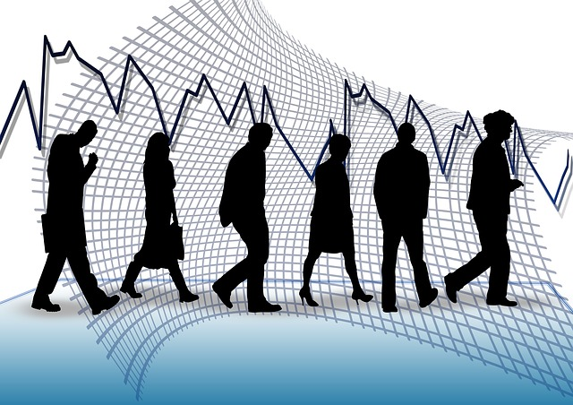
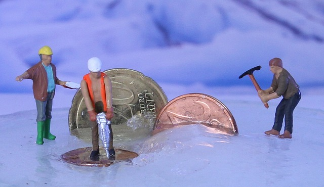
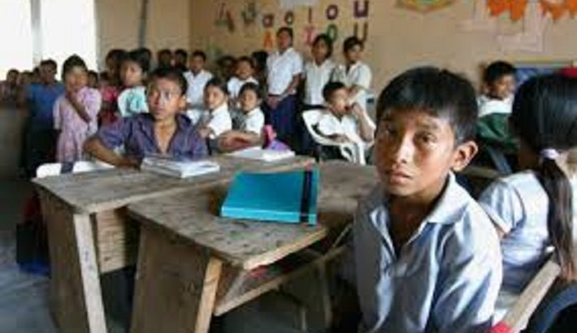

Los de Abajo 
Pobreza
Antes de todo, es necesario decir que la
Pobreza
es un fenómeno multidimensional que puede traducirse en
factores objetivos, como la falta de recursos para satisfacer las necesidades básicas para la supervivencia,
o subjetivos, tal cual la privación de la participación social por cuestiones relacionadas al género.
:quality(85)/cloudfront-us-east-1.images.arcpublishing.com/infobae/BOVKIZ76K5FE7KKOIFNKVGOKUE.jpg)
Pobreza en México (Foto: Cuartoscuro)
Causas de la Pobreza
La pobreza en México se puede ver afectada por muchos factores, los cuales pueden ser:
El desempleo
Gracias a la falta de educación que recibe este sector del país, no logran conseguir trabajos "decentes" ya
que al no contar con el conocimiento adecuado no son tomados en cuenta para este tipo de empleos.

La delincuencia
La delincuancia surge de una falta de atención o educación por parte de los padres hacia sus hijos, y estos
crecen y se desarrollan con lo que ven en su entorno, es por esto que creen que robar es una forma facil y
sencilla de obtener dinero.
Las adicciones
El facil acceso a este tipo de sustancias, favorecen que las personas se vuelvan adictas desde temprana edad
y
esto hace más difícil que a largo plazo reciban algún tipo de ayuda gracias a los daños irreparables que
crean
estas sustancias en las personas.
Trabajos mal pagados
Gracias a la difícil obtención de un buen trabajo la mayoria de las personas se tienen que conformar con los
trabajos que logren conseguir, aunque esto aveces signifique que los exploten laboralmente por unos cuantos
pesos.

La falta de educación
Ya que la mayoria de estas personas viven al día no tienen para sustentar una buena educación, y a su vez la
eduación que se puede recibir de manera gratuita es algo precaria, además de que pueden sufrir de algún tipo
de acoso o agresión debido a su situcion social
y económica y esto causa que no quieran asistir a clases o genere un desinterés por el estudio.

La pobreza y los Objetivos de Desarrollo Sostenible (ODS)
Poner fin a la pobreza en todas sus formas es el primero de los 17 Objetivos de Desarrollo Sostenible (ODS)
de la Agenda 2030 para el Desarrollo Sostenible.
TLa principal referencia en el combate contra la pobreza en los ODS se encuentra en el Objetivo 1: Poner fin
a la pobreza en todas sus formas en todo el mundo. Una de las claves para conseguirlo es garantizar una
movilización importante de recursos procedentes de diversas fuentes, incluyendo la mejora de la cooperación
internacional para el desarrollo. La meta es proporcionar medios suficientes y previsibles a los países en
desarrollo, en particular a los menos adelantados, para que puedan poner en práctica políticas y programas
encaminados a terminar con la pobreza en todas sus dimensiones.
Otra de las metas establecidas por los ODS para acabar con la pobreza es crear normativas sólidas a nivel
nacional, regional e internacional, que tengan en cuenta las cuestiones de género. El objetivo es que para
2030 podamos asegurar que todos los hombres y todas las mujeres tengan los mismos derechos al
aprovechamiento de los recursos económicos, así como acceso a los servicios básicos, la propiedad, el
control de la tierra y otras formas de propiedad, la herencia, los recursos naturales, nuevas tecnologías y
servicios financieros, incluidas las microfinanzas.
Fuente: Naciones
Unidas
Día Internacional para la Erradicación de la Pobreza
La Asamblea General de Naciones Unidas en su resolución A/RES/47/196 del 22 de diciembre de 1992, declara el
17 de octubre como el Día Internacional para la Erradicación de la Pobreza [1] marcó este día para
concienciar al mundo sobre la necesidad de erradicar la pobreza y la indigencia en todos los países. Este
objetivo es un elemento fundamental del programa de desarrollo de las Naciones Unidas[2]. Por lo tanto, la
conmemoración de esta fecha representa una oportunidad para reconocer el esfuerzo y la lucha de las personas
que viven en la pobreza, una ocasión para que den a conocer sus problemas y un momento para que ellas mismas
sean las primeras en luchar contra la pobreza.
Fuente: CNDH
México
10 acciones para lograr el ODS 1: terminar con la pobreza en el mundo
Para lograr poner fin a la pobreza es necesario un crecimiento económico inclusivo para crear empleos
sostenibles y promover la igualdad. Se deben aplicar sistemas de protección social para mitigar los riesgos
de los países propensos a sufrir desastres. Y por supuesto brindar apoyo para enfrentarse a las dificultades
económicas.
Cada agente involucrado y sus acciones cuentan, y de ahí estas 10 acciones diarias recomendadas por la ONU.
Todos las podemos llevar a cabo para contribuir a la consecución del Objetivos de Desarrollo Sostenible 1 y
así conseguir el fin de la pobreza:
Involucrar a todo tu entorno contra la pobreza
Trabaja en la medida de lo posible para involucrar a todo tu entorno, por ejemplo, organizando excursiones
periódicas para pasar un día en áreas necesitadas y ayudar a mejorar sus condiciones de vida.
Donaciones
En las celebraciones en las que se entregan regalos, ofrece la posibilidad de sustituirlos por donaciones a
una organización que luche contra la pobreza y a favor de los más desfavorecidos.
Comercio justo para evitar la pobreza
Consume de manera responsable comprando productos de comercio justo que ayuden a crear un sistema de
comercio sostenible, el cual pueda proporcionar a los trabajadores una retribución adecuada.
Consumo responsable y sostenible
Compra cualquier tipo de producto en establecimientos que donen una parte de sus ingresos a obras de
caridad.
Centros comunitarios y sociales
Aprovecha tus cualidades y habilidades personales realizando cursos o actividades en centros comunitarios y
sociales. Así podrás compartir tus conocimientos con personas que no se pueden permitir obtenerlos de otra
manera. Por ejemplo, informática, redacción de currículos, preparación de entrevistas de trabajo, idiomas…
El aprendizaje y el conocimiento resultan imprescindibles para poner fin a la pobreza.
Apadrinar
Puedes apadrinar a un niño o una niña para facilitar su acceso a alimentos, educación y sanidad.
Bancos de alimentos
Hay bancos de alimentos que se ocupan de recolectar productos alimenticios para hacérselos llegar a quienes
los necesitan. Y no lo olvides: dona alimentos no perecederos.
Promover debates sobre la pobreza
Aprovechas las herramientas digitales y tradicionales para promover debates sobre el fin de la pobreza: en
redes sociales, escribiendo artículos en un blog al que puedes invitar a otras personas a escribir, buscando
periódicos locales que lleguen de manera más directa a los lectores.
Voluntariado
Utiliza tu tiempo libre para voluntariado, por ejemplo, en refugios de personas sin techo.
Ayudar con alimentos, agua o ropa
Intenta ayudar con alimentos, agua o ropa a quienes viven en la calle, además de buscar soluciones para
acabar con esta situación.
Fuente: AQUAe
Fundación